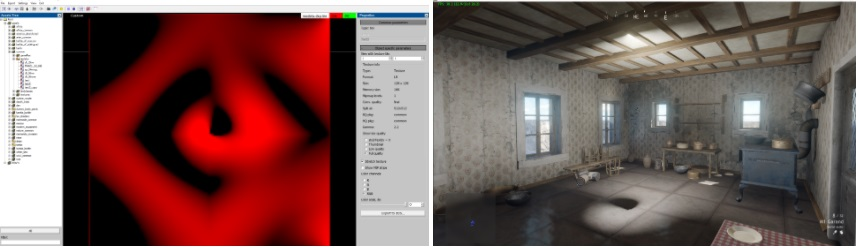
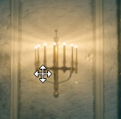
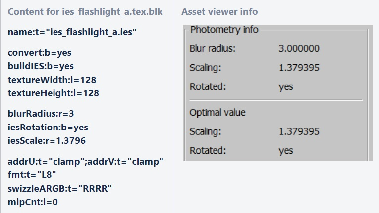
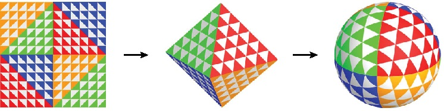

Photometric Lights (IES)
Overview
In daNetGame-based projects, along with traditional light sources like spot or omni, you can also add photometric light sources using the IES format.
An IES file is essentially a text file that defines the distribution of light intensity from a source, based on angles in 3D space. The format specification can be found here.
You can download ready-made IES files from the internet, as most lighting manufacturers provide IES profiles for their products. There are also extensive IES libraries available, containing thousands of profiles suitable for various visualization needs.
Alternatively, you can create IES profiles manually using various editors. I’ve used this IES generator, which is simple to use: you draw the light profile in the vertical plane with the mouse. The resulting profile is then “rotated” around the vertical axis (similar to the Lathe modifier in 3ds Max, which creates a 3D object from a spline). However, this tool cannot create non-symmetrical IES profiles along both axes, meaning the light distribution cannot vary simultaneously on walls and floors.

If more complex IES profiles are needed, you’ll have to find and test other software, or search for existing IES files. For simpler tasks, this tool suffices. Examples are provided at the end of this article.
Integrating IES Files in daNetGame-based Projects
Once you’ve downloaded or created an IES file, place it in the following directory:
/<project_name>/develop/assets/manmade_common/textures/ies
The following block in the global .folder.blk file handles the processing of
IES files:
virtual_res_blk{
find:t="^(.*)\.ies$"
className:t="tex"
contents{
addrU:t="clamp"; addrV:t="clamp"
convert:b=yes
buildIES:b=yes
textureWidth:i=128
textureHeight:i=128
}
}
This means that during the build process, each IES file is converted into a simple 128x128 pixel texture in L8 format.
Details of the engine’s implementation are discussed in the Photometry section.
Using an IES File in a Light Source
To use a specific IES file as a light source, simply specify its name in the
template under the light.texture_name variable and compile the vroms.
The light template for daNetGame-based projects is located at:
/<project_name>/prog/gameBase/content/common/gamedata/templates/_lights.blk
For example, a wall sconce with two lamps would look like this:
light_sconce_medium{
_extends:t="omni_light"
light.max_radius:r=3.5
light.offset:p3=0, 0, 0
light.color:c=255, 152, 70, 255
light.brightness:r=2.5
light.contact_shadows:b=false
light.texture_name:t="ies_doublelamp_sconce_a"
}
Important Notes on IES and Omni Lights
Photometric lights can only be applied to omni lights, which means they won’t cast shadows. As such, they are not suitable for use in lamps, spotlights, or similar sources. Instead, they should be reserved for artistic lighting effects.
Examples of IES Usage
Below are some example IES profiles (from left to right: view in the Asset Viewer, view in the IESGen 4 generator, and view in-game):
ies_doublelamp_sconce_a
{kind=link}
{kind=link}
{kind=link}
ies_multilamp_sconce_a
{kind=link}
{kind=link}
{kind=link}
ies_singlelamp_sconce_a
{kind=link}
{kind=link}
{kind=link}
ies_singlelamp_sconce_b
{kind=link}
{kind=link}
{kind=link}
ies_hand_lantern_a(initially intended for a kerosene lamp, but ultimately used for emergency exit signs).
{kind=link}
{kind=link}
{kind=link}
In one of the examples, to get uneven lighting on the ceiling, I simply rotated the light source horizontally by 90 degrees.
ies_monitor_a
{kind=link}
{kind=link}
{kind=link}
As shown in the last example, even under the table there is light because omni lights do not cast shadows. However, the result is acceptable – certainly better than placing there a spotlight with harsh shadows.
Limitations of IES
It’s important to understand that a single IES profile cannot perfectly recreate the complex light pattern of multi-source or surface-based lights. The light always radiates from a single point, not from multiple sources or an area. For instance, representing a wall sconce with many small bulbs using a single IES profile is always a compromise. You’ll notice that the light rays emanate from the center rather than from each individual bulb. Nevertheless, the result is still visually acceptable.
{kind=link}
Photometry
daNetGame-based projects support photometry files to describe the light distribution of omni lights. This article explains how to use them.
Supported File Types
IES
Format: ANSI/IES LM-63-19
File details: Lifewire article on .ies files
File Placement
Photometry files should be placed in the develop/assets/ directory under an
appropriate folder. To export these assets, add the following block to the
.folder.blk:
virtual_res_blk{
find:t="^(.*)\.ies$"
className:t="tex"
contents{
convert:b=yes
buildIES:b=yes
textureWidth:i=128
textureHeight:i=128
blurRadius:r=3
phiMin:r=0
phiMax:r=360
thetaMin:r=0
thetaMax:r=180
edgeFadeout:r=-1
}
}
Ensure that the asset names have the ies_ prefix. Without it, they will not be
recognized as photometry textures in the game.
The textureWidth and textureHeight components globally define the resolution
of the generated textures. While it’s possible to export photometry textures
with different resolutions, the game will not be able to load them. If you
create additional blocks to parse .ies files or add another type later, ensure
that all photometry textures maintain the same resolution.
Spotlights & Special Options
For spotlights, light is concentrated around the center, allowing for enhanced texture quality. The IES exporter supports limiting light intensity to a specific angle around the view direction (e.g., 180 degrees to restrict light to the forward direction).
Usage
This option must be applied individually to lights:
Place the
.iesfile in the appropriate directory (with a corresponding.folder.blkfor processing).Open the Asset Viewer and select the IES resource.
Check the photometry info in the right-side panel.
The top three values (blur radius, scaling, rotated) show the current configuration.
The bottom two values represent the calculated optimal values.
Create a virtual asset
.blkfile, such asies_flashlight_a.tex.blkfories_flashlight_a.ies.Specify the
iesScale:randiesRotation:bproperties with the optimal values. (Currently, this process is not automated.)
The rotation value also implicitly adjusts the scaling. These specified values should be close to the optimal values displayed in the Asset Viewer. If the values are too low, leading to a loss in texture quality, daBuild will display a warning and suggest the optimal values. If the scaling cannot store the texture properly, daBuild will produce an error.
Blurring
Blurring can help mitigate pixelation or aliasing in lights. The blurRadius is
specified in degrees, not pixels, and applies to the entire sphere to ensure
texture edges align seamlessly.
Usage
Define the blurRadius:r parameter in the .folder.blk or the virtual asset
.blk file, as shown in the examples. The default value is 3.
Angular Restrictions
The light source’s content can be restricted to specific angular ranges on both axes. The relevant options are:
phiMin:r=0
phiMax:r=360
thetaMin:r=0
thetaMax:r=180
edgeFadeout:r=-1
The
phiMin-phiMaxrange defines the restriction around the forward direction.thetaMin-thetaMaxdefines the restriction from forward (theta=0) to backward (theta=180).
Light intensity is fully preserved within the specified area. Outside this area,
it fades out based on edgeFadeout. By default, edgeFadeout:r=-1 calculates
an automatic fadeout to ensure the light doesn’t bleed more than one pixel on
the texture (resolution-dependent). If edgeFadeout >= 0, it is treated as a
degree value, independent of texture resolution.
Example:
To prevent backlight leakage through walls, use a vertical restriction with
thetaMin:r=0 and thetaMax:r=93. You must create a new virtual resource with
these parameters in the .folder.blk (e.g.,
<project-name>/develop/assets/manmade_common/textures/ies/.folder.blk).
{kind=link}
{kind=link}
Setting Photometry for Omni Light
To set the photometry for an omni light:
Add the
.iesfiles to an asset folder.Define the photometry of the omni light in the map’s
.blkfile:
entity{
_template:t="omni_light"
light.direction:p3=0, 1, 0
light.texture_name:t="asset_name"
...
}
Notes for Custom Textures
Any texture can be used as a photometry texture in
light.texture_name, but for custom textures (not generated by the IES converter), keep the following in mind:The red channel is used in the shader.
The resolution must match the photometry resolution specified in the
.folder.blk.The layout must match the mapping algorithm (spherical or octahedral).
If the resolution is low, folding lines may be visible in the light intensity. This can be mitigated by blurring the pixel pairs at the folding lines to have similar values:
Spherical mapping: Left and right sides
(0, y)↔(w-1, y)Octahedral mapping: Each side’s halves fold together, e.g., for the top:
(x, 0)↔(w-x-1, 0)
Using custom textures for purposes other than testing is not recommended due to the maintenance overhead associated with resolution and layout changes.
The game will load assets based on the
ies_prefix.Additionally, since photometry is not uniform, the light source direction must be specified. By default, the light points downward, but this may not match the orientation of the photometry in the
.iesfile. While this worked for tested files, no rule guarantees a specific orientation in.iesfiles.For better performance, lights do not store a full orientation and can rotate freely around their direction. Below are the exact details of how the light’s orientation is handled:
The light’s direction corresponds to its Y-axis. When sampling photometry data, this direction is represented by
theta = 0, whilephivaries within the range[0, 2*pi]. This typically reflects the direction in which the light was pointed during measurement.The X-axis is either
(1, 0, 0)or(0, 0, 1)— whichever option results in a vector that is perpendicular to the light’s direction. The parallel component along the light’s direction is removed to ensure this perpendicularity. The axis further from the light’s direction is chosen.
If the texture is not found, the game will issue a warning and proceed without applying a photometry texture.
In cases where no photometry texture is specified or located, the light will behave as before, using full intensity.
Mapping
.ies files typically contain a limited number of non-uniformly spaced samples.
These are converted into textures using one of two mapping methods:
Octahedral Mapping (default): Provides better sample distribution.
Spherical Mapping: Though implemented, it’s not in use due to slightly worse performance and uneven sample distribution (dense at the poles, sparse on the sides).
Changing Mapping Algorithm
To enable spherical mapping:
In
<engine_root>/prog/gameLibs/publicInclude/render/renderLights.hlsl, comment or uncomment the line:#define USE_OCTAHEDRAL_MAPPING
In
prog/tools/sceneTools/assetExp/exporters/texExp.cpp, modify the following:IesReader::ImageData img = ies.generateOctahedral(width, height); // IesReader::ImageData img = ies.generateSpherical(width, height)
Technical Details of Generated Textures
Format: L8 (8-bit, single channel)
File type:
.DDSXSpherical Mapping: The first and last pixel columns are nearly identical to avoid issues with interpolation at the folding lines (redundancy: h pixels).
Octahedral Mapping: Edge pixels are nearly matched with corresponding folding pixels (redundancy: h + w pixels).
Examples:
Test file: photometry_file_test2.ies
{kind=link}

Real data: photometry_file_t8_06nw.ies
{kind=link}
{kind=link}